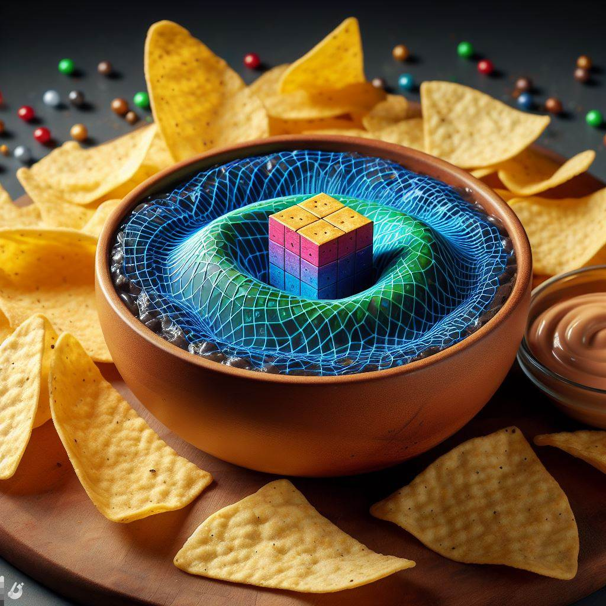

Dimensional Dip

Dimensional Dip: A creamy dip that can spice up your party with every bite.
Ingredients
- 8 ounces of cream cheese, softened
- 1/4 cup of sour cream
- 1/4 cup of mayonnaise
- 1/4 cup of dimensional spice (available at your nearest interdimensional market)
- Any seasonings of your choice (such as garlic, onion, parsley, etc.)
- In a medium bowl, beat the cream cheese, sour cream, mayonnaise, and dimensional spice with an electric mixer until smooth and fluffy.
- Add the seasonings and mix well.
- Refrigerate until ready to serve.
Serve with your favorite chips, crackers, or bread and enjoy your dimensional adventure!